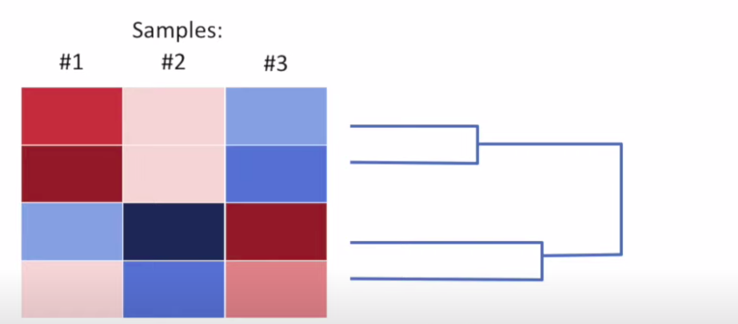
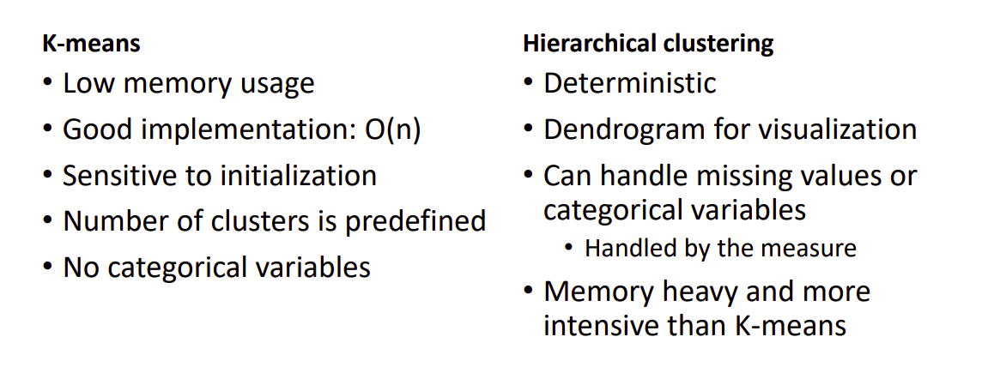

§ MALIS: Clustering
§ Hierarchical Clustering
We take a group of points and cluster them according to similarity, or dissimilarity. Let's say we have N points, each parameterized by n dimensions. to measure the similarity, all we do is create a
meaning of distance between the points, which can be done in many ways, two common ones being:
- Euclidean Distance → Take the difference of values across the n dimensions, square each one and add and then take the square root
- Manhattan Distance → Sum the magnitudes of differences across n dimensions
So, we calculate the distances between all 2 combinations of samples and then see the one with the smallest distance → We combine them into a single cluster, for which we define the values across all dimensions based on the mean metrics of the point. These values are used for further selection, as we treat this cluster as a single point and repeat the procedure, this gives us a dendrogram diagram as shown below:

The way to figure out or each point, to which cluster it belongs, we can use three metrics:
- Average values of all points in the cluster → centroid linkage
- Closest point fro each cluster → single linkage
- Furthest point from each cluster → Complete linkage
There are two kinds of problems that might arise here:
- Chaining: in the case of single linkage, we are taking the best similarity out of all the points in the clusters → What if the clusters are too far spread out and thus, overlap?
- Crowding: In the case of complete linkage, we take the worst-case scenario → What if the points in different clusters are closer together than the point in consideration i.e the clusters are too compact?
Average Linkage resolves this → centroids FTW
§ K-means Clustering
Here, we try to fit our points into K clusters:
- Select the value of K
- Take K points out of data randomly
- Calculate distances of all other points from these K points
- Classify each point into the cluster to which it has the smallest distance
- Repeat the process with the reference points now being the centroids of the points in the cluster
- Stop when the clusters do not change
- Repeat all the steps fro 2-6 with different initial points
Let's say we conduct N experiments, we now need to see which cluster is the best → We do this by selecting the one with the
least total variation across all clusters → Variation is calculated just like in PCA i.e sum squares of distances of all points in the cluster from the center and then divide it by the number of points in the cluster.
